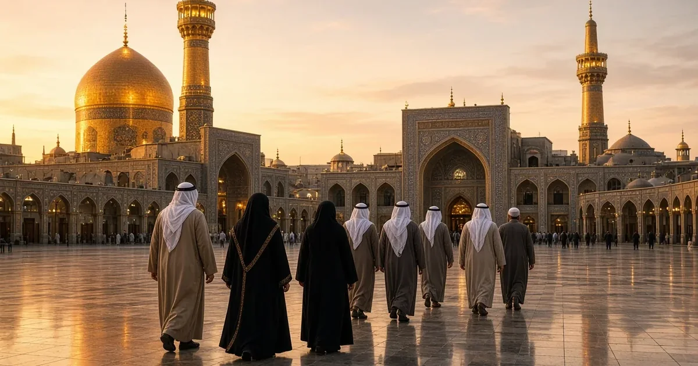

دليل السفر إلى مشهد · زيارة مشهد من العراق، السفر إلى مشهد من العراق، زيارة الإمام الرضا من العراق
السفر من العراق إلى مشهد: الرحلات الجوية والطريق البري
الإجابة المختصرة
تبدأ زيارة مشهد من العراق بتحديد موعد الرحلة وطريقة الوصول، ثم التحقق من وثائق السفر ومتطلبات الدخول الرسمية الحالية وفق الجنسية ونوع الوثيقة. بعد ذلك اختر إقامة مناسبة ونظّم وقت الزيارة والنقل مع هامش للراحة والتغييرات. راجع المصادر الرسمية قبل الحجز، لأن الإجراءات والظروف قد تتبدل.
تبدأ رحلة الزائر العراقي إلى مشهد بتحديد موعد السفر وطريقة الوصول والوثائق المطلوبة، ثم اختيار الإقامة وتنظيم وقت الزيارة. تختلف التفاصيل بحسب الجنسية والوثائق ومدينة الانطلاق وموعد الرحلة، لذلك يجب تأكيد المعلومات الرسمية قبل الحجز.

تحقق من وثائق السفر أولاً
راجع متطلبات الدخول والتأشيرة وأي شروط مرتبطة بوثائقك من الجهات الرسمية الإيرانية أو القنصلية المختصة قبل شراء التذاكر. لا تعتمد على تجربة مسافر آخر أو منشور قديم؛ فقد تختلف القواعد باختلاف الجنسية ونوع الوثيقة والتوقيت.
تأكد من صلاحية جواز السفر أو وثيقة السفر، وأسماء المسافرين على الحجوزات، وأي مستندات إضافية مطلوبة. احتفظ بنسخ آمنة من الوثائق المهمة.
اختر طريقة الوصول وفق مدينتك
لا يوجد جدول واحد ثابت لكل المدن العراقية. قارن تاريخ السفر الفعلي، ومطار المغادرة، وشروط الأمتعة والتعديل، وتأكد من أن الرحلة ما زالت معروضة للبيع لدى شركة الطيران قبل الدفع.
| مدينة الانطلاق | الخيار الذي ينبغي البحث عنه | المدة / ملاحظة التخطيط |
|---|---|---|
| النجف (NJF) | تظهر جداول منشورة رحلات مباشرة إلى مشهد في بعض التواريخ، إلى جانب خيارات التوقف عند عدم توفر رحلة مناسبة. | الرحلة المباشرة تستغرق تقريباً ساعتين و١٥ دقيقة إلى ساعتين و٣٠ دقيقة بحسب الجدول والناقل. هذا زمن طيران فقط ولا يشمل إجراءات المطار أو التأخير. |
| بغداد (BGW) | قد تظهر رحلات مباشرة إلى مشهد في بعض الأيام، كما تتوفر مسارات ربط عبر مدن أخرى بحسب التاريخ. | الرحلة المباشرة المنشورة تقارب ساعة و٤٥ دقيقة إلى ساعتين، لكن انتظام الخط وتوفره يتغيران؛ لا تعتمد على وجود رحلة مباشرة حتى تؤكدها شركة الطيران ليومك. |
| البصرة ومدن أخرى | قارن الرحلات المتاحة إلى النجف أو بغداد أو مسار ربط آخر يظهر فعلياً في تاريخك. | احسب وقت الانتقال بين المدن، وإعادة تسجيل الأمتعة، واحتمال المبيت إذا كانت التذاكر منفصلة. |
الأرقام أعلاه تقديرات لزمن الطيران المباشر كما تعرضه جداول الرحلات، وليست مدة الرحلة من باب المنزل إلى الفندق. تُظهر قواعد بيانات الجداول مسار النجف–مشهد بنحو ساعتين و١٥ دقيقة إلى ساعتين و٣٠ دقيقة، بينما تدور بعض جداول بغداد–مشهد حول ساعة و٤٥ دقيقة إلى ساعتين. يمكنك مراجعة جدول مسار النجف–مشهد وجدول مسار بغداد–مشهد. كما أفادت وكالة الأنباء الوطنية العراقية نقلاً عن الخطوط الجوية العراقية في أكتوبر ٢٠٢٦ باستئناف رحلات من النجف إلى مشهد ومدن إيرانية أخرى؛ لكن الإعلان السابق لا يضمن استمرار التشغيل أو توفر مقعد في تاريخك.
نصيحة للتخطيط: افحص الرحلات على موقع الناقل بحسب تاريخ الذهاب والعودة، وتأكد من أن التذكرة قابلة للشراء فعلاً. اترك هامشاً كافياً لوصولك إلى المطار، وتسليم الأمتعة، وإجراءات المغادرة والوصول، ثم الانتقال من مطار مشهد إلى محل الإقامة. إذا كانت الرحلة تتضمن توقفاً أو تذكرتين منفصلتين، أضف وقت انتظار احتياطياً وتحقق من إعادة استلام الأمتعة ومتطلبات العبور وحماية المسافر عند فوات رحلة الربط.
السفر براً من العراق إلى مشهد
قد تشمل خيارات عبور الحدود بين العراق وإيران معابر مثل مهران–زرباطية، وخسروي–المنذرية، والشلامجة–البصرة، وهي نقاط موثقة ضمن دراسة نقاط العبور البرية والسككية في المنطقة. هذه أسماء نقاط عبور وليست دليلاً على أن المعبر مفتوح في كل وقت أو أن هناك حافلة مباشرة إلى مشهد. بعد العبور قد تحتاج إلى ترتيب نقل بري داخلي أو تبديل وسيلة النقل، وقد تستلزم الرحلة توقفاً للراحة أو المبيت.
- تحقق قبل الانطلاق مباشرة، ويفضل في يوم السفر نفسه، من حالة فتح المعبر وساعات العمل والوثائق والقيود المؤقتة لدى السلطات الرسمية في العراق وإيران؛ فالمعلومات القديمة لا تثبت أن العبور متاح الآن.
- أكد مع الناقل نقطة النزول بعد الحدود، والجهة المسؤولة عن النقل داخل إيران، واسم الشركة أو السائق ووسيلة التواصل، وما إذا كانت الأجرة تشمل كامل المسار حتى مشهد.
- لا تفترض أن حافلة أو سيارة واحدة ستنقلك من مدينتك إلى مشهد دون تبديل؛ اطلب خط سير مكتوباً.
- قارن مدة الطريق الفعلية مع رحلة الطيران، وأضف وقتاً للطوابير والتفتيش والتبديل والراحة.
- اتفق مسبقاً على الأمتعة والتأمين وسياسة الإلغاء ورقم تواصل يعمل عند انقطاع الإنترنت.
للتفاصيل العملية راجع دليل السفر البري من العراق إلى مشهد. لا تعتمد على مدة طريق منشورة في تجربة قديمة؛ تتغير الإجراءات وحالة الطرق والمعابر.
كيف تختار بين الطيران والطريق البري؟
الطيران المباشر غالباً أبسط من حيث عدد المراحل إذا كان متاحاً في تاريخك وسعره مناسباً. أما الطريق البري فقد يناسب من يبدأ قريباً من أحد المعابر أو يريد إدخال مدن أخرى في الرحلة، لكنه يحتاج إلى تخطيط أكبر للانتقالات والراحة. قارن التكلفة النهائية من باب المنزل إلى مكان الإقامة، لا سعر التذكرة أو الحافلة وحده.
قبل شراء التذكرة، راجع متطلبات دخول إيران حسب الجنسية، ثم احسب ميزانية رحلة مشهد، واختر إقامة مناسبة من مقارنة الفنادق قرب الحرم.
الإقامة قرب الحرم
قارن عنوان مكان الإقامة وسعة الغرف وسياسة الأطفال وشروط الدفع والإلغاء. تحقق من المسافة الفعلية إلى الحرم وطريقة الوصول التي تناسبك، لا من الوصف التسويقي وحده.
اسأل عن السعر النهائي لجميع الليالي وأي رسوم إضافية. لا تعتبر السعر المنشور في مقال أو إعلان قديماً دليلاً على السعر الحالي أو التوفر.
برنامج الزيارة والميزانية
ابدأ بتحديد عدد الأيام، ثم خصص وقتاً للزيارة والراحة والتنقل. إذا كانت الرحلة عائلية أو تشمل كبار السن، خفف عدد المحطات وأضف وقتاً احتياطياً.
ضع ميزانية منفصلة للتذاكر والإقامة والوصول والتنقل والطعام والمصروفات الإضافية. احتفظ بعروض الأسعار وتاريخ الحصول عليها حتى لا تختلط التقديرات القديمة بالتكلفة الفعلية.
قبل المغادرة وبعد الوصول
- قبل الحجز: تحقق من متطلبات الدخول وصلاحية وثيقة السفر، ثم افحص الرحلة أو المعبر في تاريخك المحدد.
- قبل الدفع: اقرأ سياسة الأمتعة والتغيير والإلغاء، وتأكد مما إذا كانت تذكرة الربط على حجز واحد.
- قبل الانطلاق: احفظ العنوان ورقم الإقامة ورقم الناقل ونسخة من الحجوزات، وجهز خطة اتصال بديلة.
- عند الوصول: تأكد من اسم السائق ورقم السيارة ونقطة اللقاء قبل ركوبها، وراجع السعر المتفق عليه قبل بدء النقل.
- للعائلة وكبار السن: أضف وقتاً للراحة وتجنب وضع موعد طبي أو برنامج مزدحم مباشرة بعد الوصول.
إذا تغير موعد الرحلة أو حالة المعبر، لا تبدأ المرحلة التالية قبل تأكيد إمكانية إكمال المسار وشروط الاسترداد أو التعديل.
أسئلة شائعة حول السفر من العراق إلى مشهد
هل توجد رحلات مباشرة من النجف إلى مشهد؟
تظهر جداول الرحلات المنشورة رحلات مباشرة من النجف إلى مشهد، ويبلغ زمن الطيران المنشور قرابة ساعتين و١٥ دقيقة. عدد الرحلات والأيام وشركات التشغيل يتغير؛ تحقق من الناقل لتاريخ السفر قبل الدفع.
هل توجد رحلة مباشرة من بغداد إلى مشهد؟
تظهر جداول منشورة رحلات مباشرة في بعض الفترات، بزمن طيران تقريبي بين ساعة و٤٥ دقيقة وساعتين. لكن التشغيل والانتظام يتغيران وقد لا تظهر رحلة في تاريخك؛ تحقق من موقع شركة الطيران قبل الحجز ولا تعتمد على جدول قديم.
كم تستغرق الرحلة الجوية من النجف إلى مشهد؟
زمن الطيران المباشر المنشور يقارب ساعتين و١٥ دقيقة. لا يشمل ذلك إجراءات المطار أو الوصول المبكر أو التأخير أو الانتقال من المطار إلى الفندق.
ما المعابر البرية بين العراق وإيران التي يمكن بحثها؟
من المعابر المعروفة مهران–زرباطية، وخسروي–المنذرية، والشلامجة–البصرة. تحقق من حالة المعبر وساعات العمل والوثائق لدى السلطات المختصة في يوم السفر، ولا تفترض أن كل معبر مفتوح أو مناسب لمسارك.
هل توجد حافلة مباشرة من كل مدينة عراقية إلى مشهد؟
لا يمكن افتراض وجود حافلة مباشرة من كل مدينة أو في كل تاريخ. اسأل الناقل عن مراحل المسار ونقاط التبديل والنقل بعد الحدود والأمتعة والمواعيد وشروط الاسترداد.
هل الطريق البري أسرع أو أرخص من الطيران؟
يعتمد ذلك على مدينة المغادرة والمعبر وتوفر النقل والانتقالات والتوقفات. قارن التكلفة والوقت من نقطة الانطلاق حتى مكان الإقامة، ولا تقارن سعر تذكرة الطائرة بأجرة جزء واحد من الطريق.
ما المعلومات اللازمة لتخطيط الرحلة؟
حدد مدينة المغادرة والتاريخ التقريبي والجنسية ونوع وثيقة السفر وعدد المسافرين والميزانية ومدة الإقامة. لا ترسل صورة جواز السفر أو بياناته الحساسة عبر رسالة عامة.
هل يمكن الاعتماد على جدول رحلة منشور قبل أسابيع؟
اعتبره مؤشراً أولياً فقط. قد تتغير الجداول والتصاريح التشغيلية؛ تحقق من شركة الطيران أو الناقل في يوم الحجز وقبل المغادرة.
الخطوة التالية
إذا كنت تخطط لزيارة مشهد من العراق، يمكنك مشاركة مدينة الانطلاق وموعد السفر التقريبي وعدد المسافرين ومدة الإقامة للاستفسار عن ترتيبات الرحلة الممكنة.